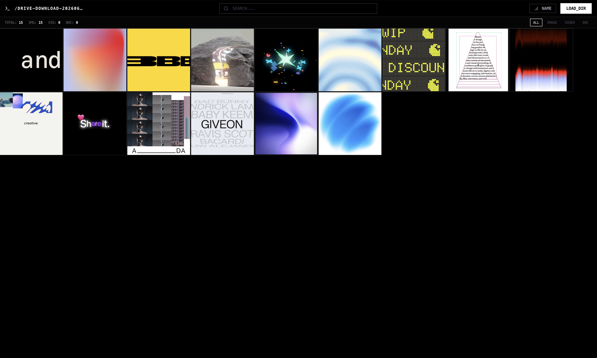

REX_System
Visionneuse de médias autonome & portable

REX_System est une visionneuse de médias ultra-rapide, autonome et sécurisée,
conçue pour être placée directement à la racine de vos disques durs externes ou clés USB.
Elle fonctionne en un seul fichier (REX_system.html) sans aucune installation ni
connexion internet requise. Elle permet de consulter directement vos images, documents et vidéos
(.jpg, .png, .pdf, .gif, .mov).